Unify the league
One visual language across fields, website, social, uniforms, merch, banners, and documents.
★ West Valley Fastpitch · Est. 1974
The official source of truth for our visual identity. See how the logos, colors, type, photography, and voice work together — and download approved, ready-to-use assets.
Brand Foundation
West Valley Fastpitch should feel established, warm, athletic, and unmistakably local — a proud community program with more than fifty years on the diamond.
One visual language across fields, website, social, uniforms, merch, banners, and documents.
Est. 1974 anchors the identity to the league's roots and its community softball lineage.
Make every touchpoint feel organized, credible, welcoming, and built to last.
Logo
The logo lettering is custom and outlined. Everything around it uses the brand fonts — the type system supports the mark, it doesn't have to match it.
Primary mark
Use it when the league needs to feel official, permanent, and recognizable: website, banners, sponsor materials, documents, social avatars, and official apparel.
Two versions of the badge — choose by size
Use only when the badge is large enough to read the date — banners, signage, apparel, sponsor boards, documents, and the site header.
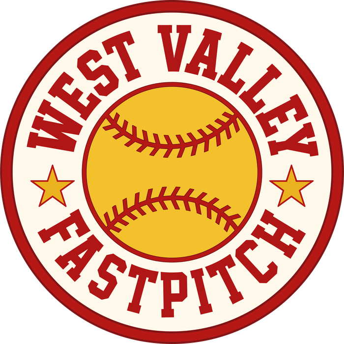
The everyday default — use it in every other case, especially small sizes: social avatars, favicons, small print, and embroidery.
They're interchangeable. It's the same badge either way. If the "Est. 1974" would be too small to read comfortably, use the version without it.
Full-color on light surfaces, white on dark
Primary RedAdditional marks
The circle badge is the foundation. These marks still live inside the brand language and can be used when the creative calls for it — reach for the core badge whenever you're unsure.
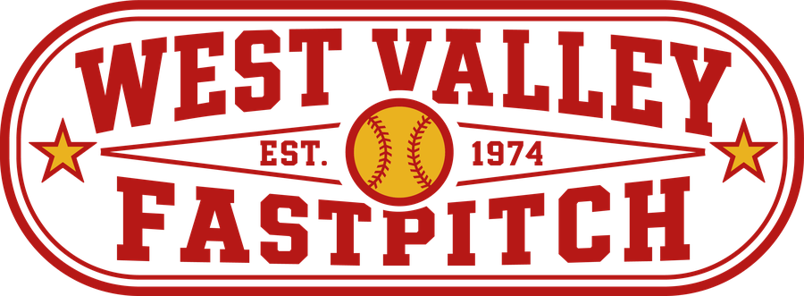
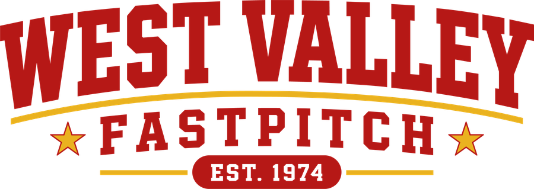
Protect the mark. Don't stretch, rotate, recolor, or add effects to any logo, and never alter Est. 1974. When in doubt, use the core circle badge.
Color
Primary red, primary cream, and softball gold are the default brand signal. Everything else supports them.
Default brand signal
Core palette · tap any color to copy its hex
Secondary accents
Use Primary Cream by default for clean, official league materials.
Use Heritage Cream for a warmer, nostalgic backdrop — history, storytelling, signage, and merch.
Deep red, dark brown, and dusty teal are optional secondary accents. Use them sparingly.
Typography
The logo is custom. Everything else uses real, repeatable fonts — on the website, banners, flyers, social graphics, sponsorship packets, rulebooks, and league documents.
West Valley
plays ball
Built to last.
Play with heart.
Registration opens March 1.
Girls fastpitch softball in West Valley City — divisions for 8U, 10U, 12U, and 14/18U. Field cleanup · 9:00 AM.
Photography
Look for dirt, dugouts, gloves, chalk lines, helmets, coaches, parents, sunset fields, and teammates celebrating. Show the girls as athletes.
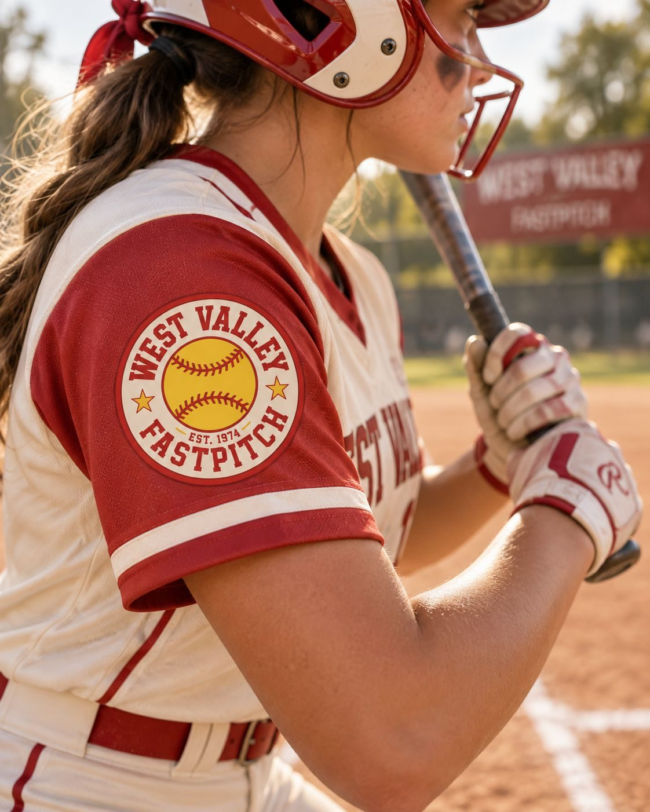
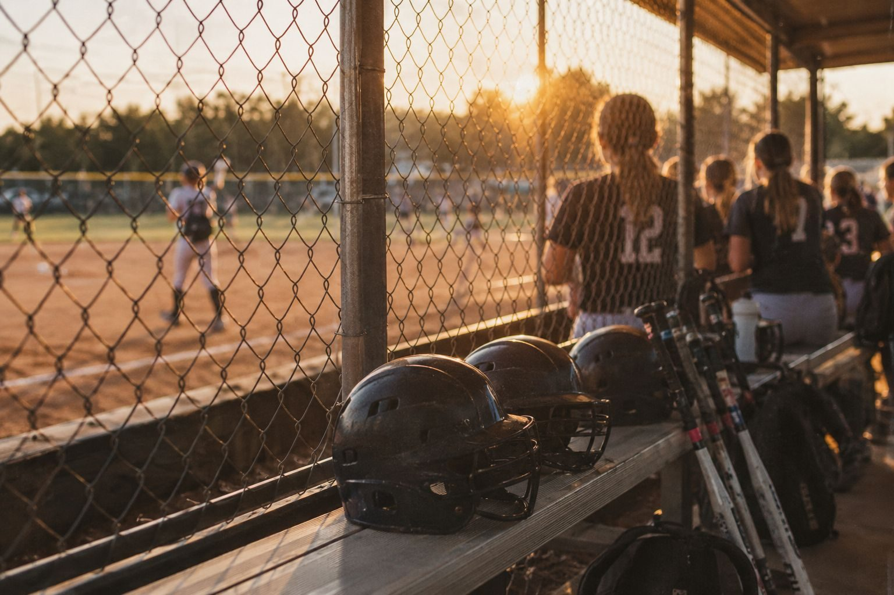
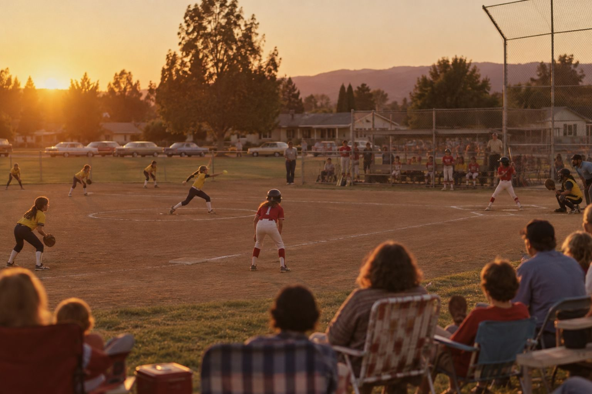
Copy & Voice
The voice should sound like a proud community program with history — direct enough for parents, spirited enough for players, and official enough for sponsors and schools.
On the legacy: Use Est. 1974 as a heritage marker tied to WVFP's roots and lineage — not as a claim that the current name or corporate structure existed unchanged in 1974.
Applications
The identity is flexible enough to work in many contexts. We always start with the core brand and work outward from there.
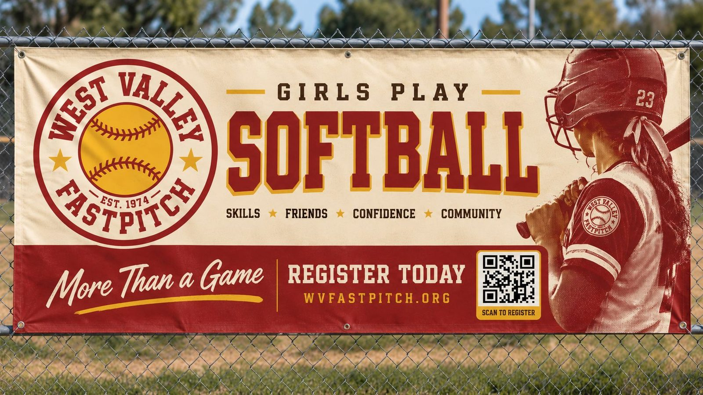
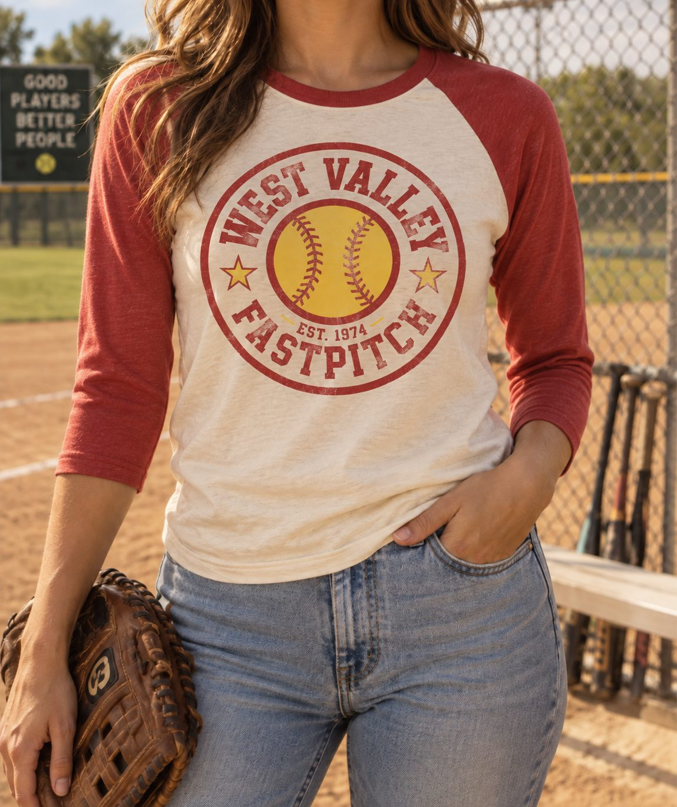
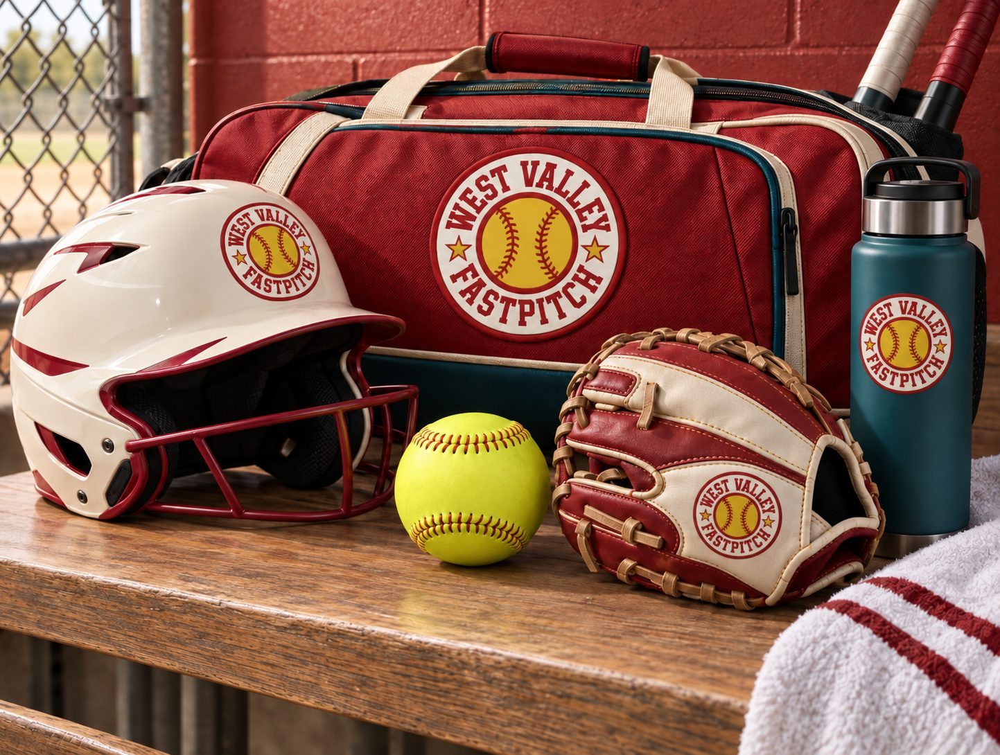
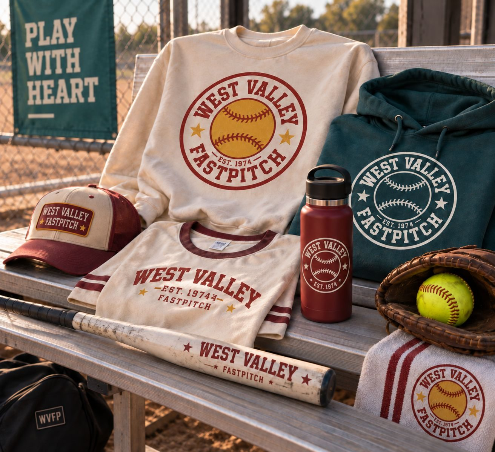
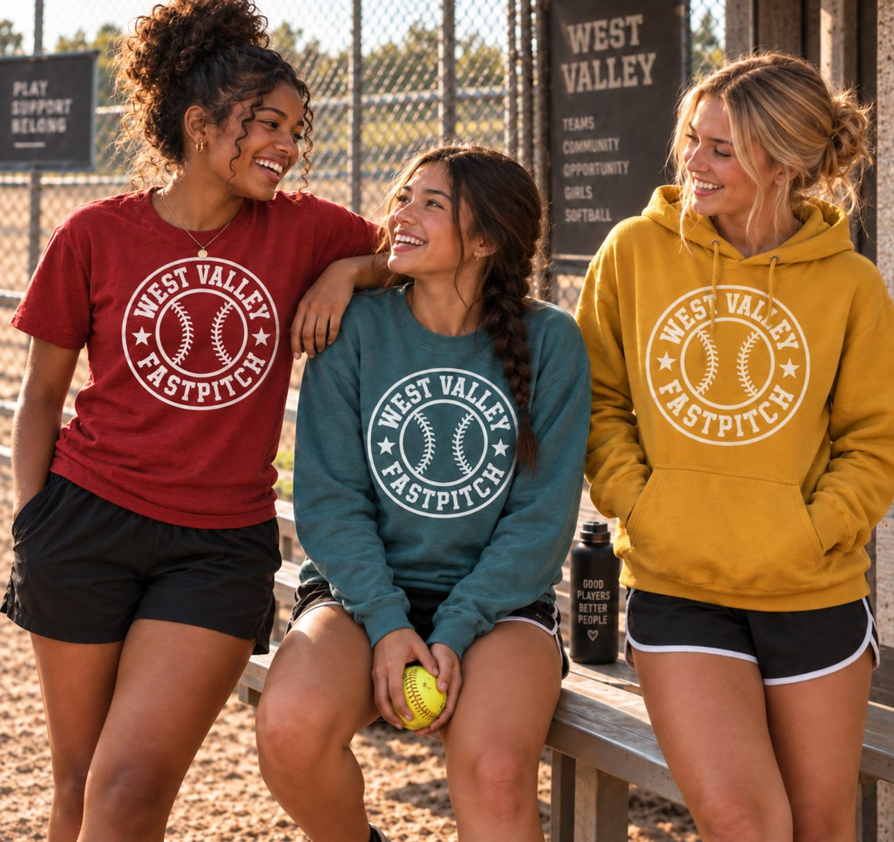
Entrance banners, field numbers, dugout signs, sponsor boards, snack shack, facility rules.
Website hero, registration pages, social templates, email headers, avatars, schedule graphics.
Official apparel, hats, coach shirts, jersey patches, all-star applications, merch drops.
Letters, coach handbook, rulebook cover, sponsorship packet, board deck, forms.
Logo Downloads
Every official West Valley Fastpitch logo, ready to use. Grab a single file below, or download the whole set at once.
All logos, every color and file type, in one download — including the print formats (AI & EPS) and versions with and without the Est. 1974 date.
Not sure which file to use?
Color vs. white: use the full-color logo on cream or other light backgrounds, and the white logo on red, brown, dark, or photo backgrounds.
The badge date: the two circle badges are interchangeable — pick the With Est. 1974 version only when it's large enough to read the date, and the no-date version everywhere else.
Keep it clean. Please don't stretch, recolor, rotate, or add effects to the logos — download the file you need and place it as-is. Questions? Reach out to the league.
{kind=link}
{kind=link}
{kind=link}
{kind=link}
{kind=link}
{kind=link}
{kind=link}
{kind=link}
{kind=link}
{kind=link}
{kind=link}
{kind=link}
{kind=link}
{kind=link}